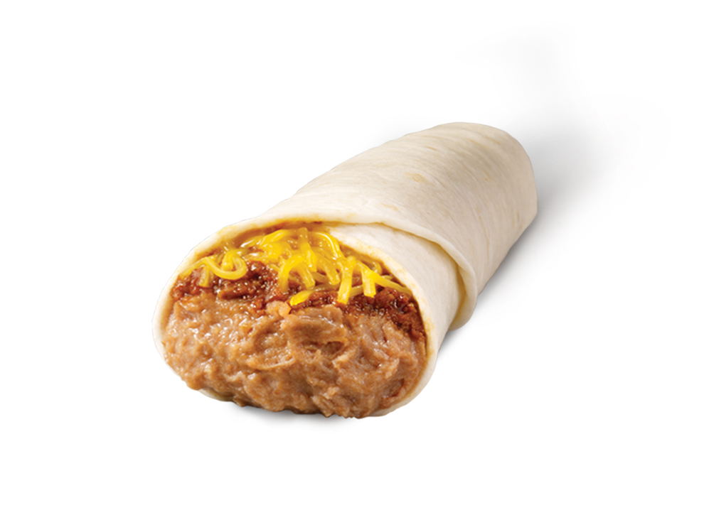

Easy Bean Burrito Recipe

Description
A family favorite when you're short on time. Loved by kids and adults alike,
bring a little fiesta into your lives.
In addition to being easy to make, these are also incredibly budget friendly!
Ingredients
- 6" or 8" Tortillas
- 3 cups Mexican Cheese
- 1 can refried beans
- Salsa and sour cream, if desired
Steps
- Warm the refried beans in a microwave for ~ 1 minute or until warm
- Spoon roughly a 1/4 cup of beans onto each tortilla (6 - 8 depending on size)
- Top each serving of beans with mexican cheese, roughly 2 - 3 pinches
- Wrap the tortilla up, folding in one end to secure beans and cheese
- Heat the tortilla over medium heat for 1 - 2 minutes per side, or until tortilla is lightly browned and cheese is melted
- Serve with salsa and sour cream
- Enjoy!